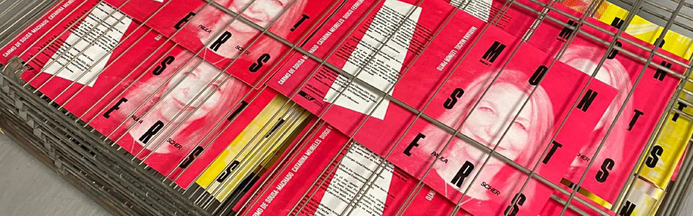
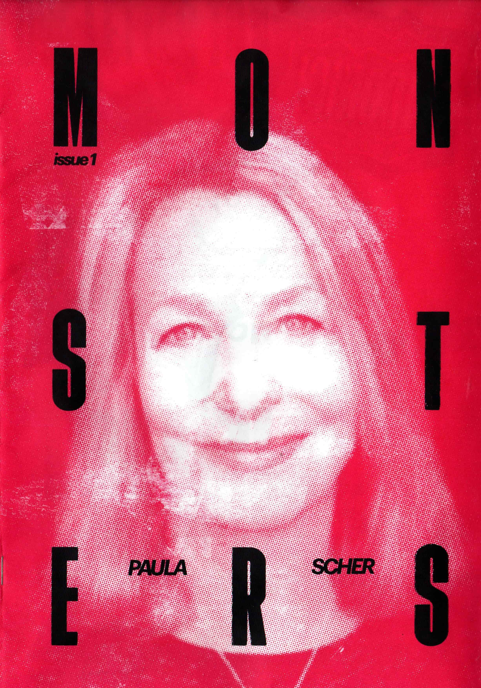
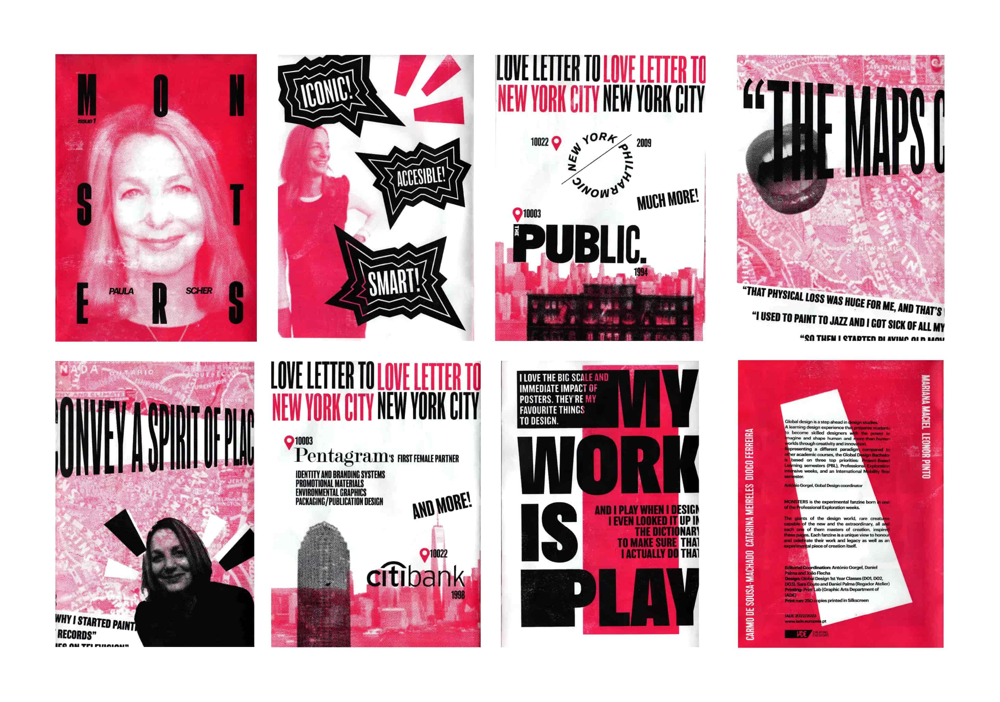
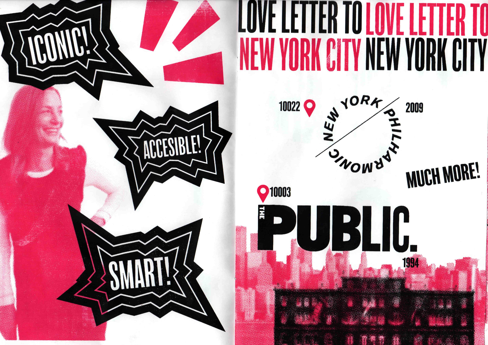
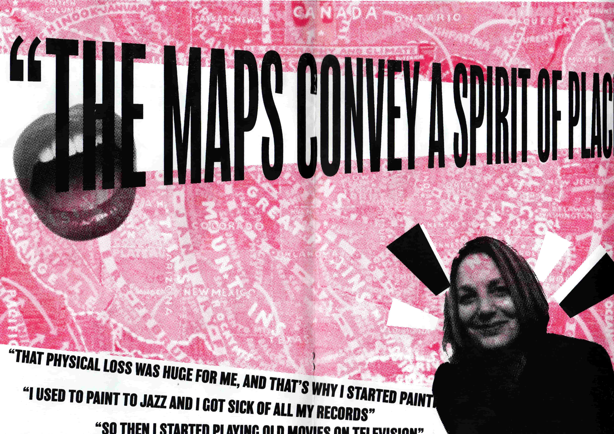
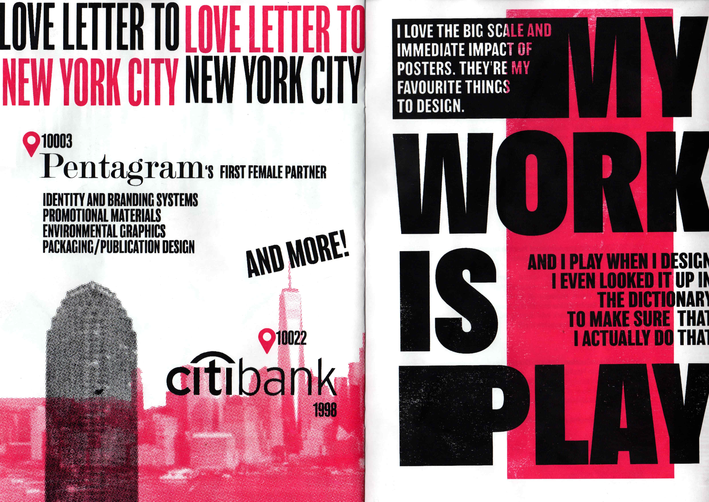
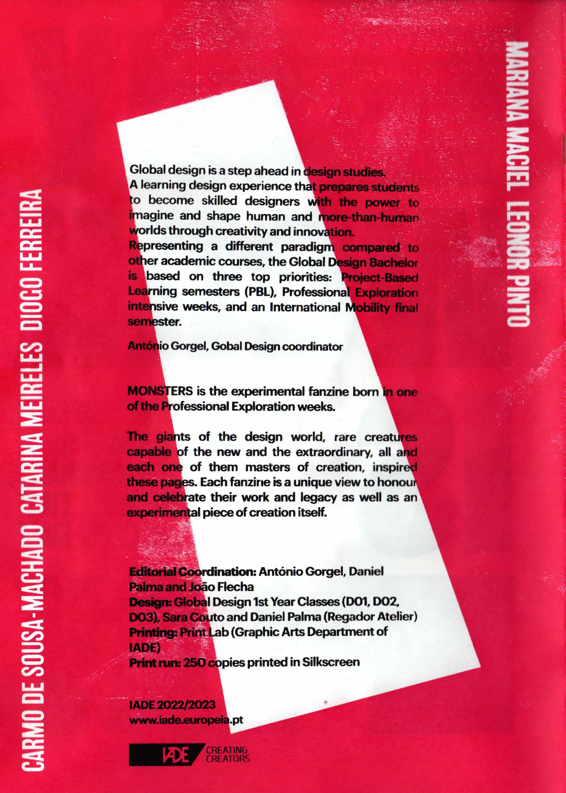
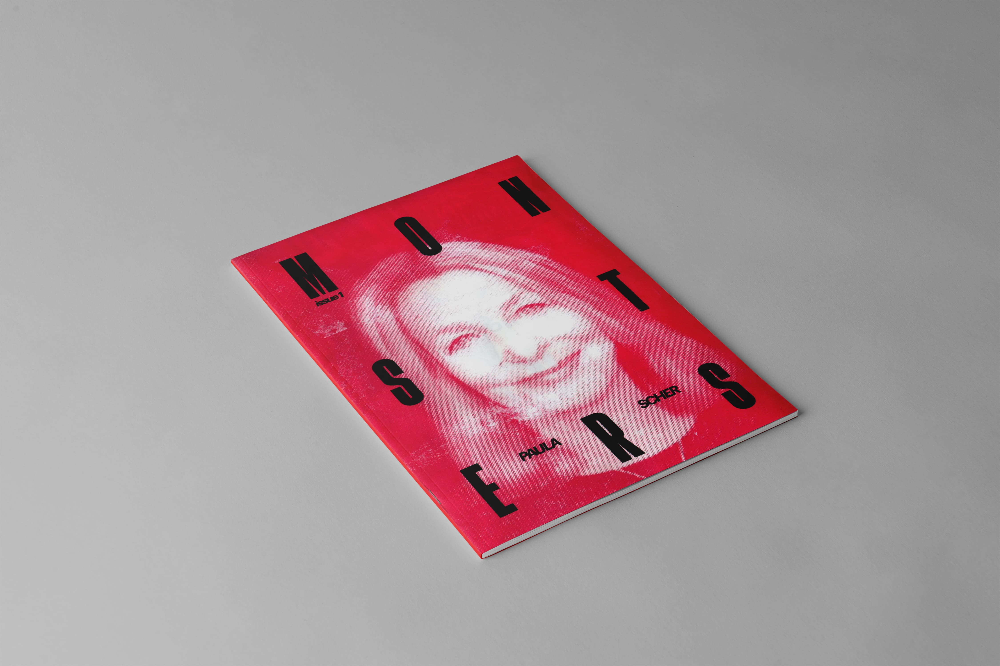

Adobe Illustrator


The Project (2023)
For this project, our team created a unique fanzine dedicated to Monsters, an experimental magazine born during our Professional Exploration week at IADE. This fanzine celebrates the visionaries of the design world, the rare “monsters” capable of pushing creative boundaries, each a master of their craft. Inspired by the transformative work of these giants, we set out to honor their impact through a collection of pages that not only reflect their legacy but also serve as an experimental piece of art in itself. By capturing the extraordinary spirit of these design icons, each fanzine offers a fresh perspective, allowing us to express our admiration for their contributions in a format that's both bold and unconventional.

For our edition, we chose to highlight the work of Paula Scher, a renowned designer from Pentagram known for her pioneering use of typography and impactful, large-scale graphic designs. Our team delved into her career and creative journey, exploring how she has redefined modern graphic design and influenced countless creatives worldwide. After our research, we transformed these insights into a set of layouts that reflect her unique style, preparing our Adobe Illustrator file meticulously for silk screen printing. By using just two colors, pink and black with white, we embraced the limitations of this medium, using contrasts to bring our tribute to life in a bold way that echoes Scher's unmistakable visual language.




